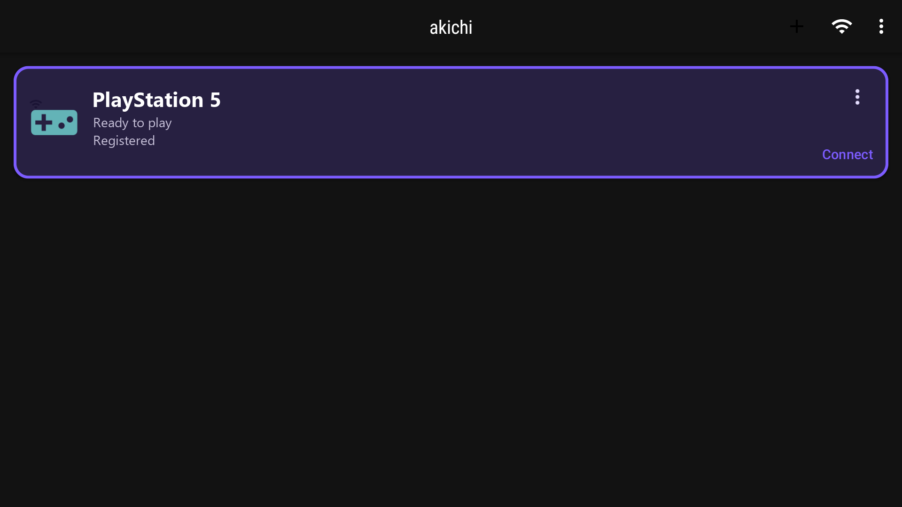
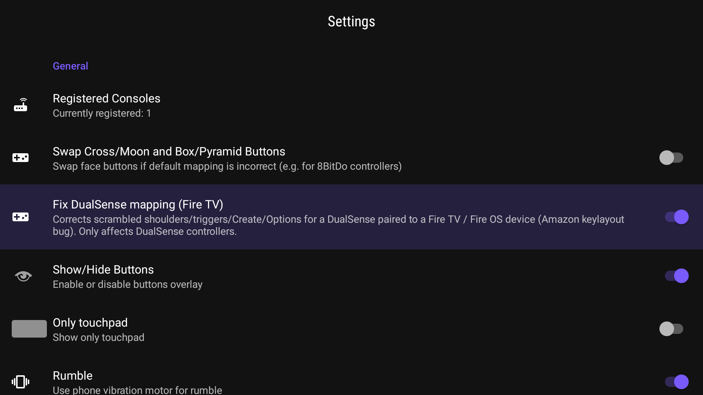
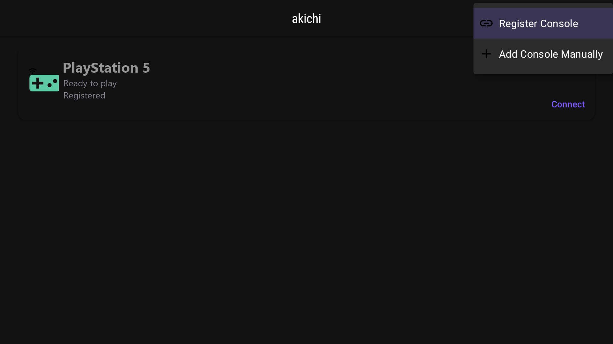
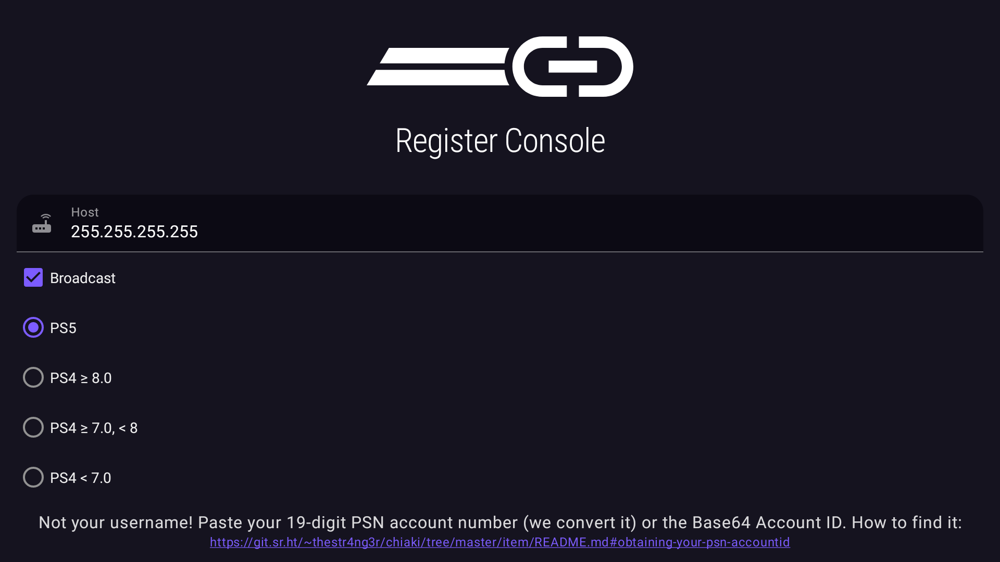

Stream your PlayStation to a Fire TV or Android TV box and play with a real controller — over your home network or the internet.

A TV-first Remote Play client that fixes what the desktop and phone forks don’t handle in the living room.
When a DualSense is paired directly to a Fire TV (Fire OS / Android 11–12), the system scrambles the button and trigger layout — L1/R1 act like L2/R2 and Options/Create don’t register. akichi detects this and corrects the mapping automatically, so your controller just works.

Full D-pad navigation, a clear accent focus highlight so you always know what’s selected, and every action up in the top bar — no floating button to hunt for.

Link your account automatically with Sign in with PSN, or enter it manually. Register a console or add one by IP — all from one screen.

The hardware decoder runs in realtime low-latency mode — snappier input-to-screen response.
Optional H265 HDR streaming for HDR-capable TVs like the Fire TV 4K.
New versions install in place — no manual reinstall, your settings are kept.
No ads, no tracking. Fully open-source under the AGPL-3.0 license.
From the Downloader app, or with adb.
akichi (or chiaki / remote ps5) to reach this page — then download the APK.akichi-stable.apk from the latest release and adb install it.Requires Fire TV / Android TV (Android 11+), a PS4/PS5 with Remote Play enabled, and a controller paired to the TV box.